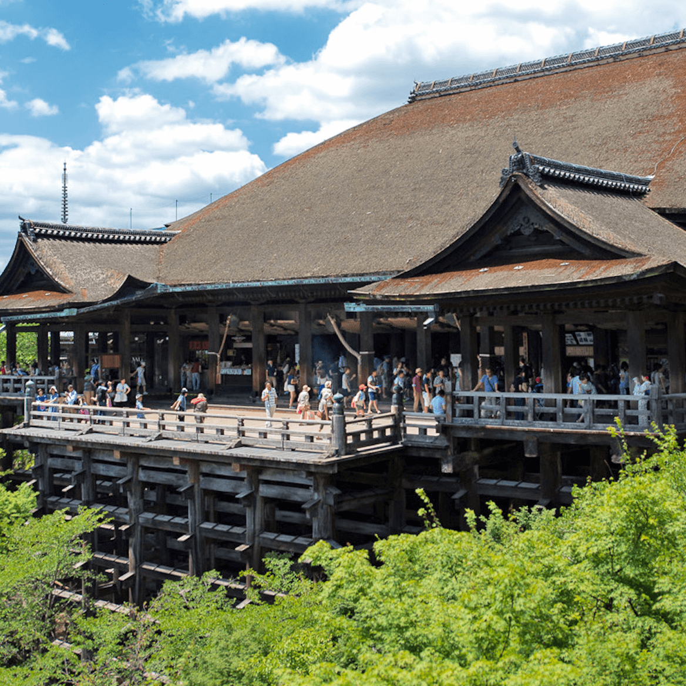

斑爛櫻花，舒適溫泉
來趟日本之旅，療癒您的身心
旅遊主題

日本精緻美食

北海道浪漫雪景

富士山經典美景

千年古都清水寺
現在就開始規劃旅程，來趟舒適爛漫的日本之旅！
日本
日本意為『太陽升起的地方』，其國花為菊花、民族之花為櫻花，日本民族之花櫻花代表著日本人的大和民族精神，在每年春天櫻花盛開，人們會準備一些食物前往櫻花樹下擺設酒席，賞花、飲酒不僅是日本人春天的樂趣，更是代表著日本大和精神的一項傳統。日本的『歌舞伎』享譽世界，絢麗多彩的舞臺佈置、扣人心弦的劇情讓日本人對於歌舞伎不僅是一種尊敬的表現，更視為是日本的代表；日本的木偶劇、文樂利用三弦進行伴奏，以歌謠的節拍表現出日本傳統道德觀念與現實社會之間的普通人的複雜愛恨交錯的感情；此外，日本的茶道和花道更是文人雅士的代表，在茶與花的境界當中追求閒寂和古雅的氣質，在精神層面享受一種超越心靈的文化，搭配優美的和服更是令人著迷。